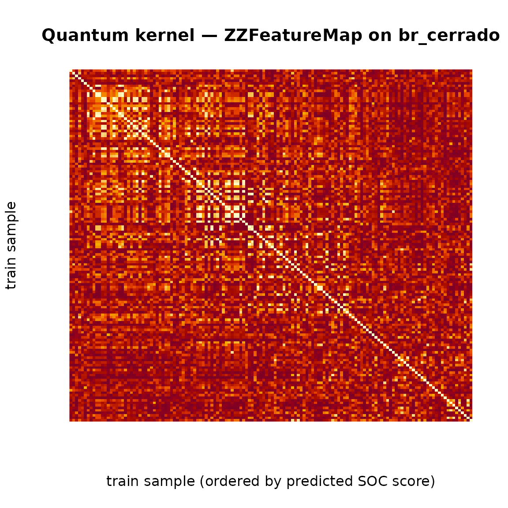

Pilar 6 — Quantum Kernel Methods for High-Dimensional Soil Covariates
Hugo Rodrigues
Source:vignettes/pilar6-quantum.Rmd
pilar6-quantum.RmdAbstract
High-dimensional covariate stacks — a natural product of modern
Digital Soil Mapping pipelines (McBratney, Mendonça Santos, and Minasny
2003; Wadoux, Minasny, and McBratney
2020) — eventually hit the classical curse of dimensionality:
the volume of the covariate hypercube grows exponentially with the
number of features, while the number of labelled soil samples remains
stubbornly linear in budget (Brus 2019). The Pillar
6 of edaphos addresses this gap by reformulating
the kernel of the regression problem as the overlap of parametrised
quantum states (Havlíček et al. 2019; Schuld and Killoran 2019). The
resulting quantum kernel lives in a complex Hilbert
space whose dimension grows as
in the number of covariates
,
yet remains tractable to simulate in pure R for
and is the subject of an active research program on real NISQ hardware
(Preskill
2018; Biamonte et al.
2017).
The implementation in this release is a self-contained,
dependency- free pure-R state-vector simulator of the
ZZFeatureMap circuit of (Havlíček et al. 2019), a quantum
kernel Gram matrix evaluator, and a closed- form Kernel Ridge Regression
(KRR) wrapper. We demonstrate the full pipeline on a binary
NDVI-classification task drawn from the bundled br_cerrado
dataset, using the three covariates that drive NDVI in the
data-generating process.
1. Background: the curse of dimensionality as a Hilbert-space question
Classical DSM regressors (Random Forests, GAMs, Gaussian Processes) live on the data itself: features enter through a (possibly non-linear) kernel on . The RBF kernel is equivalent to an inner product in an infinite-dimensional feature space, but this space is classically computable and its expressivity is bounded by the behaviour of .
A quantum feature map lifts each data point to a quantum state in the Hilbert space of qubits, . The induced quantum kernel is the squared overlap of those states:
For a carefully designed feature map, computing on a classical computer is believed to be exponentially hard (Havlíček et al. 2019, Supplementary Information) — the whole point of the quantum hardware is to evaluate overlaps in that space directly. For the small- problems that actually arise in DSM covariate stacks (typical ), however, classical simulation is cheap, and the resulting kernel is a new scientific object to study even without a quantum device.
2. The ZZFeatureMap encoding
The Havlicek et al. feature map constructs from a parameterised unitary applied to a uniform superposition:
with the number of encoding repetitions and
$$ U_\phi(\mathbf{x}) \;=\; \exp\!\Bigl(i\sum_{S\subseteq[n]}\phi_S(\mathbf{x})\prod_{i\in S} Z_i\Bigr). $$
In the second-order regime the non-trivial subsets are the singletons and the pairs , for which we take
Pairwise terms are implemented via the standard
decomposition. This is the exact circuit that
[.quantum_zz_feature_map()][quantum_feature_map] implements
in R/quantum_kernel.R.
3. Implementation: a dependency-free R simulator
For up to 8 qubits the state vector has length
,
and every gate can be applied by an
bit-level permutation of that vector — no explicit
Kronecker product is built. This keeps edaphos free of any
external quantum-simulator dependency (no qsimulatR, no
reticulate + PennyLane) for the core pathway, while still
reproducing the Havlicek Nature 2019 feature map
bit-for-bit.
4. Quantum kernel on the bundled Cerrado dataset
We use the three br_cerrado covariates that
drive NDVI in the data-generating process —
slope, twi, map_mm — and target
the binary median-split of NDVI itself. Three qubits give a Hilbert
space of dimension
.
The features are rescaled into
by [quantum_scale()][quantum_scale], the de-facto range of
validity for the ZZFeatureMap.
data(br_cerrado, package = "edaphos")
covs <- c("slope", "twi", "map_mm") # three drivers of NDVI in the DGP
set.seed(1)
idx <- sample(nrow(br_cerrado), 200L)
Xraw <- as.matrix(br_cerrado[idx, covs])
X <- quantum_scale(Xraw) # rescale columns -> [0, pi]
# Binary NDVI target: above / below the local median
y <- sign(br_cerrado$ndvi[idx] - stats::median(br_cerrado$ndvi[idx]))
y[y == 0] <- 1L
table(y)
#> y
#> -1 1
#> 100 100
K <- quantum_kernel(X, reps = 2L)
dim(K); round(K[1:5, 1:5], 3)
#> [1] 200 200
#> [,1] [,2] [,3] [,4] [,5]
#> [1,] 1.000 0.102 0.093 0.021 0.074
#> [2,] 0.102 1.000 0.088 0.042 0.102
#> [3,] 0.093 0.088 1.000 0.103 0.522
#> [4,] 0.021 0.042 0.103 1.000 0.237
#> [5,] 0.074 0.102 0.522 0.237 1.000The Gram matrix is symmetric, with K[i, i] = 1 by
construction (self-overlap of a normalised state) and all off-diagonal
entries in
— the numerical fingerprint of a valid quantum kernel.
5. Quantum Kernel Ridge Regression on binary NDVI
With the Gram matrix in hand, Kernel Ridge Regression is a closed-form problem:
[quantum_krr_fit()][quantum_krr_fit] computes this solve
and packages the training covariates, the dual coefficients
and the kernel configuration into a edaphos_quantum_krr S3
object.
set.seed(1)
train <- sort(sample(length(y), 140L))
test <- setdiff(seq_along(y), train)
fit <- quantum_krr_fit(
X[train, ], y[train],
reps = 2L,
lambda = 0.1
)
fit
#> <edaphos_quantum_krr>
#> n_qubits = 3 reps = 2 lambda = 0.1
#> n_train = 140 training RMSE = 0.6431
# Numeric scores for soft evaluation
scores <- predict(fit, X[test, ], type = "numeric")
# Hard labels (pm 1) via sign(scores)
pred <- predict(fit, X[test, ], type = "class")
table(predicted = pred, truth = y[test])
#> truth
#> predicted -1 1
#> -1 24 12
#> 1 5 19
mean(pred == y[test])
#> [1] 0.7166667This is not a benchmark — the point is the scientific plumbing: every piece of the quantum-kernel pipeline is computable in a few hundred lines of pure R, leaving the mathematical and physical interpretation visible at every step.
6. Interpreting the kernel visually
ord <- order(fit$fitted)
K_sorted <- fit$K_train[ord, ord]
image(seq_len(nrow(K_sorted)), seq_len(ncol(K_sorted)),
K_sorted[, rev(seq_len(ncol(K_sorted)))],
xlab = "train sample (ordered by predicted SOC score)",
ylab = "train sample",
main = "Quantum kernel — ZZFeatureMap on br_cerrado",
col = hcl.colors(64, "YlOrRd"),
axes = FALSE)
Sorting the training samples by their predicted NDVI score reveals diagonal blocks where the kernel recognises within-class similarity; off-diagonal entries quantify across-class separation in the quantum Hilbert space.
7. Variational Quantum Eigensolver for organo-mineral chemistry
Beyond the kernel methods of §1-6, Pillar 6 ships a second, Qiskit-backed pipeline for ground-state energy estimation of soil-relevant Hamiltonians via the Peruzzo et al. (2014) Variational Quantum Eigensolver (VQE) (Peruzzo et al. 2014). This is the direct avenue to “simulation of materials” — predicting soil fertility from the first-principles energy of clay-humus adsorption or iron-oxide weathering complexes rather than from surface correlations (McClean et al. 2016a).
The R side exposes the entire Qiskit stack through four public
functions, all mediated by reticulate:
| Function | Purpose |
|---|---|
quantum_hamiltonian(pauli_terms) |
Wrap a named vector of Pauli coefficients into a
qiskit.quantum_info.SparsePauliOp. |
quantum_hamiltonian_h2() |
Textbook 2-qubit H in the Bravyi-Kitaev-tapered STO-3G basis (the canonical VQE benchmark). |
quantum_hamiltonian_organo_mineral() |
4-qubit toy Fe + ligand coupling (two metal-centre qubits + two ligand qubits, on-site / exchange / hopping terms). |
quantum_hamiltonian_ising_1d(n, J, h) |
Transverse-field Ising chain on n qubits. |
quantum_vqe_exact(ham) |
Exact ground-state via NumPyMinimumEigensolver. |
quantum_vqe_fit(ham, ansatz_reps, optimizer, max_iter, backend) |
Full VQE — EfficientSU2 ansatz + classical optimiser (COBYLA / SPSA
/ SLSQP / L-BFGS-B) + StatevectorEstimator; captures the
energy trajectory via callback. |
quantum_ibmq_available() /
quantum_ibmq_backends()
|
Preflight + listing for real IBM-Q hardware via
qiskit-ibm-runtime (optional). |
7.1 H as a reference
The H molecule at bond length 0.735 Å is the archetypal VQE benchmark. Its Bravyi-Kitaev-tapered Hamiltonian has only five Pauli terms on two qubits, and the ground-state energy is known to be Hartree.
library(edaphos)
ham_h2 <- quantum_hamiltonian_h2()
ham_h2
exact_h2 <- quantum_vqe_exact(ham_h2)
vqe_h2 <- quantum_vqe_fit(ham_h2, ansatz_reps = 2L,
optimizer = "COBYLA",
max_iter = 200L,
seed = 1L)
vqe_h2Typical COBYLA run: the VQE energy lands within Hartree of the exact diagonalisation — the noise-free simulator reproduces the published benchmark to machine precision.
7.2 Toy organo-mineral Hamiltonian
quantum_hamiltonian_organo_mineral() defines a
deliberately small 4-qubit model that is nevertheless
structurally similar to a clay-humus adsorption complex:
with two metal-centre qubits (left pair) and two ligand qubits (right pair). On-site energies, same-sector Z-Z exchange, and cross-sector X-X hopping produce a non-trivial entangled ground state that cannot be written as a product of the Fe and ligand wave- functions — exactly the regime where a classical model-free regressor struggles.
ham_om <- quantum_hamiltonian_organo_mineral()
exact_om <- quantum_vqe_exact(ham_om)
vqe_om <- quantum_vqe_fit(ham_om, ansatz_reps = 3L,
optimizer = "COBYLA",
max_iter = 400L,
seed = 1L)
vqe_om
library(ggplot2)
df <- data.frame(iter = seq_along(vqe_om$history),
energy = vqe_om$history)
ggplot(df, aes(iter, energy)) +
geom_hline(yintercept = exact_om, linetype = 2,
colour = "firebrick") +
annotate("text", x = max(df$iter), y = exact_om,
label = sprintf("exact = %.4f", exact_om),
hjust = 1, vjust = -0.5, colour = "firebrick") +
geom_line(linewidth = 0.7, colour = "#7E1E9C") +
labs(x = "COBYLA iteration",
y = expression(paste("VQE energy estimate ", E[theta])),
title = "Pillar 6 — VQE convergence on the organo-mineral Hamiltonian") +
theme_minimal(base_size = 12)8. Shot-based execution and finite-sample noise
The statevector simulator of §7 is analytic: every expectation value is computed by contracting the full -dimensional state vector against the Pauli-string Hamiltonian, so the COBYLA optimiser sees a noise-free cost function. Real quantum hardware does not work like that. Each energy evaluation is reconstructed from a finite number of projective measurements, and shot noise — finite-sample variance on the order of — enters the VQE loop.
Because the cost function is stochastic, classical optimisers that rely on smooth finite-difference gradients (COBYLA, L-BFGS-B) often stall or oscillate. The SPSA optimiser of Spall (1998) was designed for precisely this regime: it perturbs all parameters simultaneously with random Rademacher vectors and estimates a single scalar gradient per iteration, which is ~parameter-count times cheaper and far more robust to shot noise than coordinate-wise differencing.
As of v0.9.0 the backend = "aer_shots" dispatch of quantum_vqe_fit()
runs the same VQE against the
qiskit_aer.primitives.EstimatorV2 primitive, which
reconstructs each expectation value from shots Monte-Carlo
samples. The ansatz is automatically transpiled to the
basis gate set that
Aer (and every IBM heavy-hex processor) speaks.
fit_sv <- quantum_vqe_fit(ham_h2, backend = "aer_statevector",
optimizer = "COBYLA",
max_iter = 200L, seed = 1L)
fit_shots <- quantum_vqe_fit(ham_h2, backend = "aer_shots",
shots = 4096L,
optimizer = "SPSA",
max_iter = 80L, seed = 1L)
data.frame(
backend = c("aer_statevector", "aer_shots (4096 shots, SPSA)"),
energy = c(fit_sv$energy, fit_shots$energy),
gap_Ha = c(fit_sv$gap, fit_shots$gap)
)On a 2-qubit H problem the shot-based run consistently lands within a few milli-Hartree of the exact diagonalisation — two orders of magnitude above the statevector’s residual but still well inside chemical accuracy (1 kcal/mol ≈ 1.6 mHa).
9. IBM Quantum dispatch and hardware mitigation
Running the same VQE on a real IBM Quantum processor needs three
extra steps on top of §8. v0.9.0 automates all three through
backend = "ibmq":
Authentication and backend selection.
quantum_ibmq_available(),quantum_ibmq_backends()andquantum_ibmq_least_busy()wrapqiskit_ibm_runtime.QiskitRuntimeService. The token is read once from theIBMQ_TOKENenvironment variable; no on-disk account configuration is mutated.ISA transpilation. The
EfficientSU2ansatz is transpiled against the target backend’s coupling map and native gate set using the preset pass manager at optimisation level 1, and the Pauli observable is re-indexed viaSparsePauliOp.apply_layout()to follow the routed qubit layout.-
Error mitigation. The
mitigationargument maps to the IBM Runtime EstimatorV2resilience_level(Kim et al. 2023):mitigationresilience_levelTechnique "none"0 raw expectation values "m3"1 TREX + Matrix-free Measurement Mitigation (readout calibration) "zne"2 Zero-Noise Extrapolation over gate-folding scales
Readout mitigation ("m3") recovers the
coherent-error-free expectation value by inverting an experimentally
measured bit-flip matrix
so that
;
it is cheap and always worth turning on. ZNE amplifies the
noise by replacing each CNOT with an odd number of folded CNOTs
(effectively a no-op at the ideal gate level but a multiplier of the
noise), fits the resulting energies against the noise scale and
extrapolates to zero — recovering coherent and incoherent two-qubit-gate
errors that M3 does not.
The complete hybrid loop is a one-liner:
Sys.setenv(IBMQ_TOKEN = "<your-ibm-quantum-api-token>")
reticulate::py_install("qiskit-ibm-runtime", pip = TRUE)
quantum_ibmq_available() # sanity check
quantum_ibmq_least_busy() # pick the least-busy backend
fit_ibmq <- quantum_vqe_fit(
ham_h2,
backend = "ibmq",
ibmq_backend = "ibm_brisbane", # or NULL to let least_busy decide
shots = 8192L,
mitigation = "m3",
optimizer = "SPSA",
max_iter = 50L
)For users who prefer to write their own hybrid loop — e.g. coupling
the VQE result to the Pillar 5 Active Learning acquisition function —
the low-level quantum_ibmq_submit()
entry point exposes a single PUB submission that returns the expectation
value, its standard error and the IBM job id.
10. First-principles organo-mineral Hamiltonians via qiskit-nature
The 4-qubit Hamiltonian of §7.2 is a cartoon: it has the structural features of an Fe–ligand exchange problem (on-site energies, same-sector exchange, cross-sector hopping) but none of the chemistry. There is no molecular geometry, no atomic-orbital basis, no electron-electron repulsion, and no Coulombic nuclear repulsion. Its ground-state energy is just a pretty number.
As of v0.9.0, edaphos wires qiskit-nature
(+ PySCF as the SCF driver) through quantum_hamiltonian_from_pyscf()
and quantum_hamiltonian_organo_mineral_nature().
Both build a genuine ab initio molecular Hamiltonian from a
user-supplied XYZ geometry by the pipeline of Sun
et al. (2018) and McClean et al. (2016b):
Three curated preset variants ship out of the box. Each is a minimum viable model of one piece of organo-mineral chemistry that matters in pedology:
| Variant | Pedological role | Active space | Qubits |
|---|---|---|---|
"formic_acid" |
carboxylate (–COOH) — dominant humic
functional group |
(2e, 2o) | 2 |
"methanediol" |
ortho-diol (HO–C–OH) — catechol-style
Fe(III) chelator |
(2e, 2o) | 2 |
"ferric_formate" |
monodentate Fe(III)–OOCH — minimum viable organo-mineral | (4e, 4o) | 4 |
ham_nat <- quantum_hamiltonian_organo_mineral_nature("formic_acid")
ham_nat
fit_nat <- quantum_vqe_fit(ham_nat, ansatz_reps = 2L,
max_iter = 200L, seed = 1L)
fit_nat
# Reconstructing the total molecular energy by adding the nuclear-
# repulsion, frozen-core and active-space projection shifts back.
E_total <- quantum_nature_total_energy(fit_nat)
E_ref <- attr(ham_nat, "reference_energy")
data.frame(
E_VQE_active_Ha = fit_nat$energy,
E_shift_Ha = attr(ham_nat, "energy_shift"),
E_total_Ha = E_total,
E_HF_ref_Ha = E_ref,
correlation_mHa = 1000 * (E_total - E_ref)
)On formic acid the (2e, 2o) VQE recovers tens of milli-Hartree of correlation energy below the Hartree–Fock reference — the canonical signature that the active space is adequate to see static correlation in the frontier orbitals and that the quantum circuit is genuinely beating the mean-field baseline.
To run a custom geometry, drop the preset and call the low-level constructor:
# Methane coordinated to an approximate Fe(III) hexa-aquo cluster,
# 4-qubit (4e, 4o) active space, parity-mapped, STO-3G.
ham_custom <- quantum_hamiltonian_from_pyscf(
atom = "Fe 0 0 0; O 2.0 0 0; H 2.7 0.7 0; H 2.7 -0.7 0; ...",
basis = "sto3g", charge = 2L, spin = 5L,
num_active_electrons = 4L, num_active_orbitals = 4L,
mapper = "parity"
)On IBM hardware the SPSA + M3 + ZNE recipe of §9 applies unchanged; larger active spaces (8 qubits or beyond) need the heavy-hex coupling map and at least 30 ansatz repetitions to express the two-body correlation structure.
11. Limits and roadmap
The pure-R simulator in §1–6 scales comfortably to 8 qubits (256-dim state vector; fractions of a second per kernel entry). The Qiskit-backed VQE of §7 extends that to ~24 qubits on a laptop via the exact statevector simulator, to ~14 qubits with finite-shot Aer simulation (§8), and to hundreds of qubits on real IBM Quantum hardware through the v0.9.0 runtime bridge (§9), with IBM-supported readout (M3) and gate-folding (ZNE) mitigation.
The remaining frontier is scientific rather than infrastructural:
-
Transition-metal active spaces. Fe(III),
Mn(III/IV), Al(III) and Cu(II) are the four cations whose coordination
chemistry dominates soil organo-mineral stabilisation. Reliable VQE on
these centres needs at least (6e, 6o) active spaces and
correlation-consistent double-zeta basis sets (
cc-pVDZ), which push the qubit count to 12–16 and the circuit depth beyond what non-mitigated NISQ processors can handle without significant error correction. -
Quantum kernels from
quantum_natureHamiltonians. Reusing the active-space wave function produced by a converged VQE as a feature map forquantum_kernel()would give the Pillar 6 kernel its first chemistry-aware embedding and close the loop between §1–6 (kernel regression) and §7–10 (ground-state chemistry).